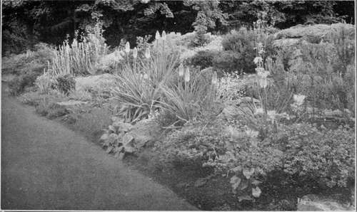

Chapter III. Preparing Garden Soil And Composts
Description
This section is from the book "Town Gardening", by Mary Hampden. Also available from Amazon: Town Gardening.
Chapter III. Preparing Garden Soil And Composts
About Lime, Sand, Soot, Leaf-mould, Cocoa-nut Fibre Refuse, etc. How to detect Poverty of Soil. The necessary Tools. About patent Fumigants, Insecticides, Fertilizers, etc.
IT is futile to plant in undug garden ground. No matter what the soil is supposed to be like, it must be forked over at least. The depth to which this has to be done depends partly on what is to be grown, yet a two-foot depth may be regarded as necessary for all but quite dwarf subjects, or the more usual bedding-out 'stuff,' geraniums, asters, calceolarias, lobelia, etc., which will put up with only nine or ten inches of 'worked' soil beneath them. Trees and larger kinds of evergreen or flowering shrubs want a three-foot depth of cultivated soil for their roots to penetrate. If these roots, after living in prepared soil for a time, strike down upon ground that is rock-hard or full of clinkers, bricks, etc., they are either turned aside in search of better luck, in which case the trees do no good for a year or two, or they dry up themselves, and the trees 'unexpectedly' die. The amateur had better use a strong five-pronged fork to dig with, employing a spade to shovel out soil when that is necessary. A four-inch-deep layer of old manure put in two feet below the ground surface, and another layer put in one foot below the ground surface, prepare flower-garden soil satisfactorily.
A Well-Planted Bank.
Simple Ground Preparation.
When only bedding plants and ordinary medium tall perennials are to be cultivated, it is often sufficient to put one layer of manure at the depth of a foot, forking for a few inches below where this is to lie, then incorporating a little of the old manure, broken small, with a few handfuls of builder's lime (not unslaked lime), with all the rest of the ground above.
Lime can be bought from florists, nurserymen and builders. Unslaked lime is used to lay over insect-infested soil for a few weeks before forking it in, but the sites so treated should not be planted for several months.
Slaked, or builder's lime—lime, that is to say, that has lost its chief burning effect through being stored—can be forked in, about a pint to a three-foot by three-foot space, at any time, and planting may follow in a few days.
Lime of all kinds will damage leaves and stems if carelessly cast upon them.
Lime is precious, to the town gardener especially, because it is a soil purifier, as well as a deterrent to, and, if often used, a destroyer of snails, slugs, wireworm, etc. Its other use is to release the chemical properties of manures, so rendering them fit for plants to feed upon.
Fresh manure, from stables, cowsheds, or roads, is only fit for nourishing ground that will not be planted for three months or so ; it is too crude to dig in just before planting. Of course, one can put it in a foot deep, and sow seeds on the surface soil, because then it will be partly decayed before the roots reach down.
Old manure, obtainable from nurseries, is dark, more or less fibrous and light, or capable of becoming light when dry. The disintegration of its constituents has brought it to a merely warming, instead of a heating, state. Extremely sandy, chalky, gravelly gardens are improved by old cow manure or mixed farmyard manure; but old stable manure, from which all the long straw has been removed, is best for gardens of heavy or damp soil, and, indeed, for the great majority of town gardens.
If the ground cakes hard very soon after rains it needs some sharp sand or grit to render it more porous. Crushed brick-rubble, with an equal part of coarse sand, either silver sand or roadside sand, is often used to make up soil for the top portions of beds and borders.
When the gardener wishes to mix composts for himself for pot and box filling, he should obtain for his potting attic or shed, good loam, leaf-mould, very old fairly dry manure, coarse silver sand, fine silver sand, crushed brick-rubble or mortar, and roadside or river-bed sand ; also some florist's charcoal, some old turves and old cocoa-nut fibre refuse. Old soot is a more useful ingredient for soils in the country than in towns, where lime should generally take its place, also for laying round plants to keep slugs away. The natural earth will, of course, have been sooted for years by countless chimneys, and even town-bought potting composts, or plain loam or leaf-mould, are usually very sooty. Peat is only necessary for a few subjects.
The " ordinary compost," as it is called, for growing pot plants in, consists of two parts of loam, one part of leaf-mould, and half a part of sand. Another admirable compost is made of one part loam, half parts each of old chopped manure, and leaf-mould and sand. To the first of these an eighth part of crushed brick-rubble can be added, on occasion, or slaked lime be added instead, in the proportion of a tablespoonful to a quart.
Fine silver sand is needed in the sifted compost when seed boxes are filled and seedlings potted. Gardeners can collect their own leaf-mould, but it must rot for about a year, or longer, in a place where the weather can act upon it but insects cannot make the stack their home. Oak and beech leaves are best; most leaves can be used, except those of evergreens.
Old cocoa-nut fibre refuse is very useful for mixing with the pieces of old turves that go in first over crocks, or can be used with an equal quantity of coarse loam, instead of those pieces of turf. Fresh cocoa-nut fibre refuse makes a nice mulch over beds, borders and the tops of boxes, urns, etc., greatly improving their appearance, and helping to conserve moisture in the soil, and to protect roots from sun-heat or drying winds.
There are various kinds of chemically-treated hop manures thai are excellent for using when natural manures are not obtainable, or when the hop's tion-odorous cleanliness is preferred.
Alas, there are town gardens so terribly poor as to surface soil—say for the first foot of surface— that this ought to be all taken away and a fresh layer of loam put on ! Or this poor upper soil ean be buried two or more feet deep, and the soil that has lam below be brought up to form the new surface. If the manure Layers are added, as already advised, this treatment will be very efficacious.
When all the things that are alive in the garden are of a sickly colour as to foliage, and throw puny blossoms, or none at all, it is certain that they are dying very slowly of starvation in exhausted ground.
Famous results can be achieved with but a few tools. The fork and spade should be kept company by a fine rake, not too heavy or long in the rake itself, a Dutch hoe with a five- or six inch blade, a sharp steel trowel, a small handfork, a pair of seeatears tor priming, a sharp budding or pruning knife, and a two-inch blade steel spud. This last tool does a hundred small jobs, while the Dutch hoe could do but ten ! It will enable the gardener to prick over beds and borders often, thus keeping-weeds down, soil pulverized, and insects very much disheartened. It will cut the daisies, dandelions, etc., out of the turf, or trim grass edges at a pinch. It is serviceable for chopping lifted perennial roots into pieces for replanting, for giving slugs a quick and merciful death, for drawing little drills for seeds, even for drawing the soil back when seeds are sown.
There are plenty of admirable insecticides that may be used to clear ground of pests. These are soil fumigants, and are sold with instructions for their use. There arc dozens of useful liquid insecticides for washes, syringings, etc. ; also weedicides and weed-killers, mildew-washes, insect-powders, fertilizers, etc. etc., to which the zealous gardener can turn for aid. The chapters given in this book about Daily Routine work contain hints for fighting most foes ; also suggest how chemical manures may be applied.
Continue to:
- prev: Chapter II. Artificial Beds And Borders, Boxes, Tubs, Barrels, Etc
- Table of Contents
- next: Chapter IV. Planting And Potting